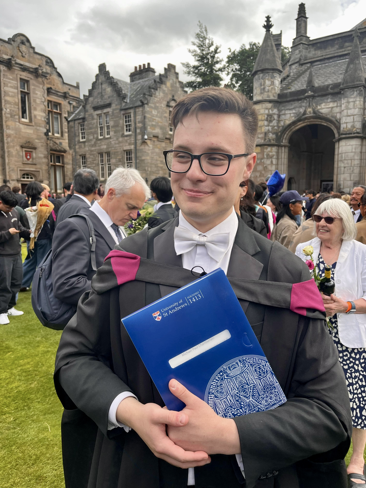

Mathematics Tutoring
Michael graduated from the University of St Andrews in 2025 with an integrated Master’s degree in Mathematics. He pursued a broad programme of study, including algebra, number theory, probability theory, computational mathematics and the history of mathematics.
His Master’s thesis analysed several results from Gauss’s Disquisitiones Arithmeticae, placing them within the mathematical landscape of the time and examining the initial reception of this extraordinary text.
Alongside his musical work, Michael has professional experience working with secondary-school pupils at The Portsmouth Grammar School. He offers online and face-to-face tuition in GCSE Mathematics, Further Mathematics and Physics, Additional Mathematics FSMQ, and A-Level Mathematics and Further Mathematics.
His teaching places particular emphasis on developing genuine mathematical understanding and confidence, alongside the problem-solving skills and exam technique required for success in assessments.
